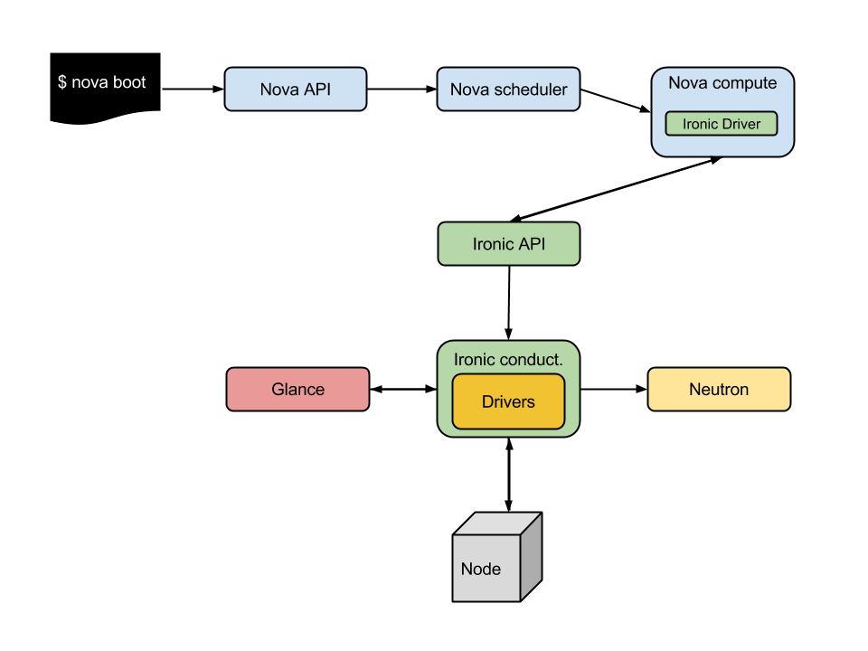
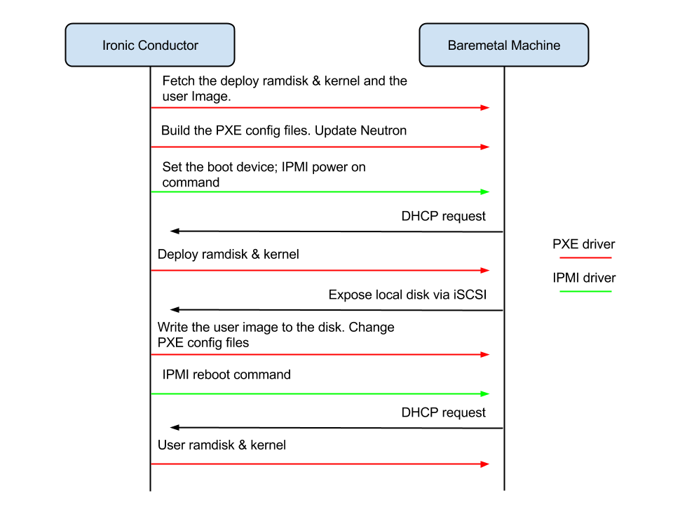
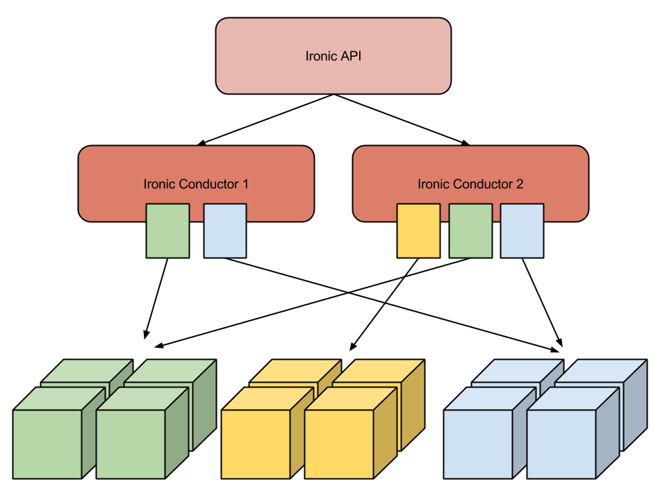

Imre Farkas, Lucas Gomes and Matt Wagner

class PXEAndIPMIToolDriver(base.BaseDriver):
def __init__(self):
self.power = ipmitool.IPMIPower()
self.deploy = pxe.PXEDeploy()
pxe_vendor = pxe.VendorPassthru()
ipmi_vendor = ipmitool.VendorPassthru()
mapping = {'pass_deploy_info': pxe_vendor,
'set_boot_device': ipmi_vendor}
self.vendor = utils.MixinVendorInterface(mapping)
class IPMIPower(base.PowerInterface):
def validate(self, task, node):
...
def get_power_state(self, task, node):
...
def set_power_state(self, task, node, pstate):
...
def reboot(self, task, node):
...

